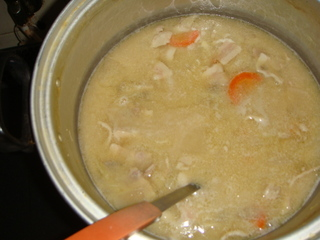
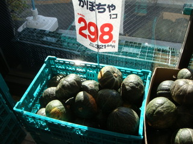
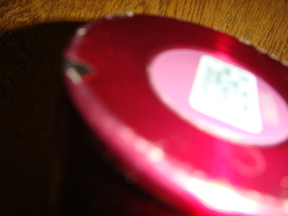
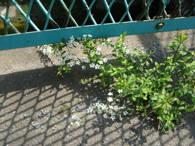
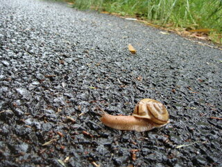
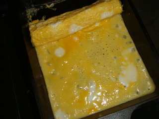
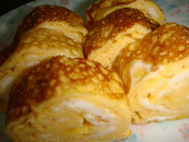

⭐︎グルメ日記⭐︎
グルメと関係ないことも書いてます！！！！不定期更新。
10/12
レシピサイトの運営、始めます(^^)
ずっとやってみたいな〜と思っていたので、
思い切ってスタートしてみました。
かな〜り
ゆったり
まったり更新になると思いますが（笑）
気が向いたときに、
ふらっと覗いていただけたら嬉しいです。
がんばるぞ〜☆
10/13
今日は豚汁を食べました(^^)
豚肉と、
ありものの野菜を入れておけば、
とりあえずおいしくなるの、いいですよね〜。

しかも、大鍋で作ってしまえば
何日かもつのも助かります。
明日も食べるのが楽しみです♪
10/17
焼き芋の匂いにつられて、
普段は寄らないスーパーに
ふらっと入ってしまいました（笑）
もう安納芋が出回る季節なんですね〜。
さつまいもって、
凝ったことをしなくても
ちゃんとおいしいのが嬉しいです(^^)
10/19
秋はね、
もうしかたないですよね……。
食欲の秋ですから！！
芋・栗・かぼちゃ、
全部好きなんです〜。

かぼちゃの甘露煮とか、
急に食べたくなります(^^)
忙しいったらありゃしません（笑）
10/22
映画を観に行ってきました(^^)
ポップコーンも、
Lサイズを一人で
平らげてしまいました（笑）
今日はいつもより
塩が効いている気がして、
とってもおいしかったです。
映画も、
もちろん面白かったですよ！！！
ところで。
わたし、
予告編が流れている間に
ほとんど食べ終えてしまうタイプなんですが、
これって一般的なんでしょうか……？
目の前にあると、
つい手が伸びますよね（笑）
11/10
白菜と豚バラの
くたくた煮を作りました〜(^^)
この季節は、
やっぱり鍋ものですね。
温まりますし、
簡単ですし、
一石二鳥です！！
なによりおいしい！
煮込みすぎても、
これまたおいしい！！
最早、
一石三鳥でしょうか（笑）
11/29
もうクリスマスの時期なんですね。
今年も、
あっという間に
終わってしまいそうです……。
この時期は、
どこに行っても
ケーキのカタログが置いてあって、
つい持ち帰って、
眺めてしまいます(^^)
王道のいちごケーキも
おいしそうですし、
ショコラや抹茶も捨てがたいですね。
想像が
どんどん膨らみます♪
12/8
近所で、
季節外れの縁日をしていました。
縁日って、
いくつになっても
胸がときめきますよね(^^)
屋台でイカ焼きを食べました。
人生初イカ焼き（笑）
おいしかったです！
勢い余って、
ヨーヨーすくいにも挑戦！！
頑張って、
ひよこをゲットしました♪
角ばっていて、
なんだかかわいいです(^^)
12/10
冬でも虫って
いるんですね〜。
できれば、
冬眠してほしいところです！！！
切実に……（泣）
12/29
今日はオムレツを作りました(^^)
気づけば、
久しぶりだった気がします。
少し焼きすぎてしまいましたが（笑）
マヨネーズの力で
うまく相殺できていました！
おすすめです〜。
1/6
あけまして
おめでとうございます(^^)
新年早々、
ちょっと不運なことがありました……。
お気に入りの水筒を落としてしまって、
盛大に凹みが（泣）
手汗をかきやすいとはいえ、
まさか落とすとは……。

ずっと使ってきたものなので、
かなりショックです。
明日は
いいことがありますように。
今年も、
ゆるっとよろしくお願いします（笑）
1/23
柑橘系のフルーツって、
おいしいですよね(^^)
子どもの頃は、
酸っぱくて
あまり得意じゃなかったんですが（笑）
今は、
その酸っぱさが
クセになってきました〜。
……とはいえ、
今も缶詰のみかんが
一番好きだったりしますが（笑）
1/27
信田巻きって、
ローカルフードなんでしょうか！？
職場で話しても、
全然通じなくて……（泣）
手間がかかるからですかね〜。
おいしいので、
もっとメジャーになってほしいです。
信田巻き推進事業、
立ち上げたいところですね（笑）
2/2
ポン酢とお酢を
間違えてしまいました（泣）
これ……
ギリギリ使えますかね？
意外と
いける気がしています（笑）
2/20
今日は天気がよくて、
お散歩日和でした(^^)
アスファルトの隙間から
咲いている花がきれいで、
思わず足を止めてしまいました。

いい季節ですね。
3/12
虫って、
鏡に集まる習性が
あるんでしょうか。
な〜んか、
よく見る気がします。
気づいたら
いなくなっているので
いいんですけどね（笑）
毎回、
ちゃんと驚いてしまうので、
もう少し強くなりたいです。
3/19
昨日の残り物を
お弁当に持って行ったら、
職場の先輩に
驚かれました〜。
いつも
カップ麺を啜っている印象が
強いらしいですが……
それはそれで
失礼ですよね（笑）
4/2
今日はお風呂の鏡に
カナブンがいて、
てんやわんやでした（泣）
ああいうのって、
どこから入り込んでくるんでしょうか……。
最近、
多い気がしますし。
無事に
さよならしましたが、
なかなか慣れませんね。
5/3
高校生の頃、
少し背伸びをして、
ジュエリーショップへ
誕生日プレゼントを
買いに行ったことを、
ふと思い出しました。
あのときとは
違うブランドですし、
今回は二人でしたが、
自分たちのものとはいえ、
やはり
独特の緊張感がありますね(^^)
5/10
人よりは、
ちゃんと掃除しているつもりなんですけどね〜。
マンションも
まだ新しめですし、
水辺に近いわけでもないですし……。
それなのに、
どうしてなんでしょう。
なにか
いい対策があれば、
ぜひ教えてほしいです(^^)
5/22
大人になると、
お弁当に入っていたおかずって、
なかなか
食べる機会が減りますよね〜。
タコさんウィンナーとか(^^)
6/8
今日はあいにくの雨でしたが、
道端で
カタツムリを見つけました。
生で見るのは、
何年振りでしょうか。

ゆっくり進む姿が
愛らしくて、
しばらく眺めてしまいました。
なんだか、
サイゼリヤに
行きたくなりますね（笑）
6/27
学生時代によく食べていた
菓子パンを、
久しぶりに食べました〜。
あの、
1袋に5本くらい
入っているやつです！
懐かしい（笑）
わたしは
チョコチップより、
レーズン派でした(^^)
購買のパンって、
どこから仕入れていたんでしょうか……？
7/2
最近、
家の中で
小さなクモを
よく見かけるんですが……！
なんなんでしょう、
あれ。
毎回、
ちゃんと
「うわっ」てなります（笑）
7/13
毎日暑くて、
なんだか
気が滅入ってしまいますね……。
最近は、
食欲も
あまり湧かなくて。
そんなときは、
夏の主役・
そうめんの出番です！
そうめんつゆに
ラー油を少し入れるのが、
密かなお気に入りです(^^)
7/20
家の中が涼しいからって、
入り込んでこないでほしいんですが……！
最近、
やっと虫除けスプレーを
導入したものの、
これ、
本当に効いてるんでしょうか（笑）
全然いますし！
スプレーをかける前に
いなくなりますし！
どうにか
ならないものですかね（泣）
7/28
ゲリラ豪雨に当たってしまって、
びちょびちょで
帰ってきました（泣）
暑い季節とはいえ、
すぐに
お風呂へ直行です！！
なんだか
どっと疲れてしまったので、
レンジで完成するものを
食べました……。
傘のありがたみを、
しみじみ
実感しました。
7/30
盛大に
風邪をひきました……。
絶対に、
この前のびちょ濡れが
原因です（泣）
夏風邪、
本当にしんどいですね。
そういえば、
高校生の頃も
同じようなことが
あった気がします。
あのときに食べた
梅おかゆが、
恋しいです。
8/3
部屋の中に
蚊がずっといて、
全然集中できません……。
許すまじ！
許すまじ！！
ちなみに、
まだ刺されてはいないので
セーフです（笑）
9/1
賞味期限の近い卵が
いくつか残っていたので、
スクランブルエッグにしました(^^)

何も考えなくても、
それなりに
おいしくなる料理って、
最高ですよね（笑）
9/12
たまご焼きを食べました。
本当に、
久しぶりです。
何年振りでしょうか。

しょっぱくておいしかったです、
ちゃんと。
9/15
消化不良でしょうか……?
ここ最近、
なかなか
体調がすぐれません
ホームページに戻る